参考博文：
手把手教你用Hexo+Github 搭建属于自己的博客
20分钟教你使用hexo搭建github博客
什么是 Hexo？
Hexo 是一个快速、简洁且高效的博客框架。Hexo 使用 Markdown（或其他渲染引擎）解析文章，在几秒内，即可利用靓丽的主题生成静态网页。
搭建步骤
- 搭建环境准备（包括node.js和git环境，gitHub账户的配置）
- 安装Hexo
- 配置Hexo
- 怎样将Hexo与github page 联系起来
- 怎样发布文章
- 主题 推荐
- 主题Net的简单配置
- 添加sitemap和feed插件
- 添加404 公益页面
前提条件(环境准备)
- nodejs环境配置
- git环境配置
- github帐号注册
配置Node.js环境
下载Node.js：nodejs链接，根据你自己的操作系统下载相应的安装包。
注意：windows XP是安装不了的。如图所示：
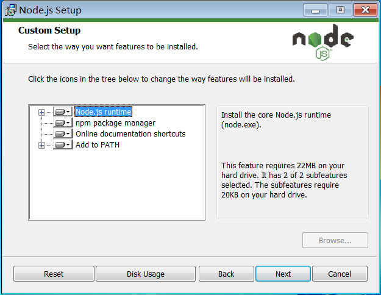
保持默认设置即可，一路Next，安装很快就结束了。
检查一下是不是要求的组件都安装好了，同时按下Win和R，打开运行窗口：
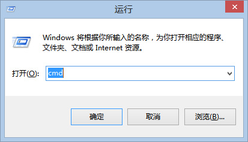
在新打开的窗口中输入cmd，敲击回车，打开命令行界面。（下文将直接用打开命令行来表示以上操作，记住哦~）
在打开的命令行界面中，输入1
2node -v
npm -v
说明：？？？？？？？？？？
如果结果如下图所示，则说明安装正确，可以进行下一步了，如果不正确，则需要回头检查自己的安装过程。
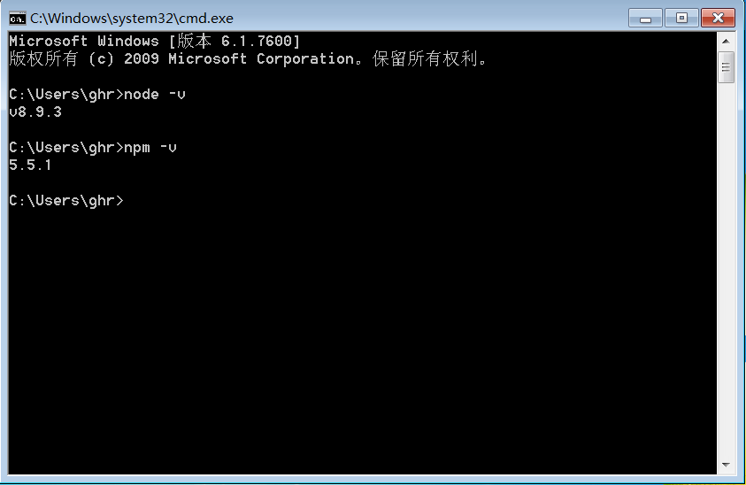
配置git环境
下载Git安装文件：GIt官网下载地址,根据自己的操作系统选择安装包。
然后就进入了Git的安装界面，如图：
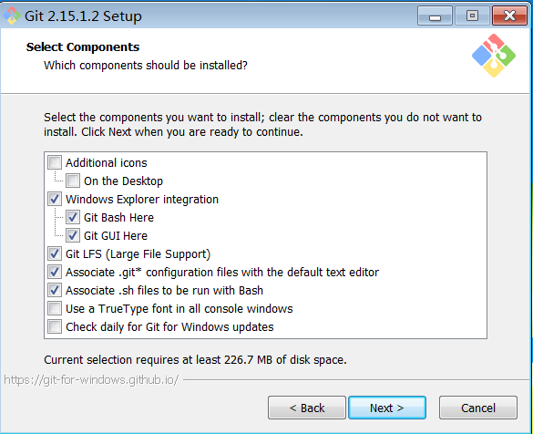
和Node.js一样，大部分设置都只需要保持默认，但是出于我们操作方便考虑，建议PATH选项按照下图选择：
Git PATH设置
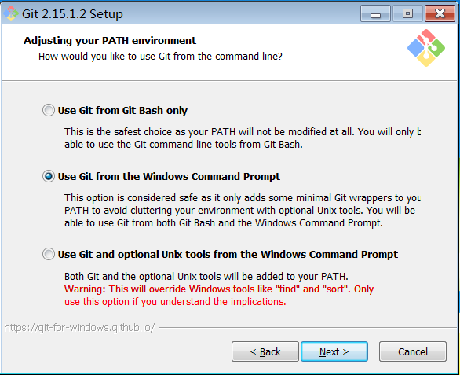
这是对上图的解释，不需要了解请直接跳过 Git的默认设置下，出于安全考虑，只有在Git Bash中才能进行Git的相关操作。按照上图进行的选择，将会使得Git安装程序在系统PATH中加入Git的相关路径，使得你可以在CMD界面下调用Git，不用打开Git Bash了。
一样的，我们来检查一下Git是不是安装正确了，打开命令行，输入：
1 | git --version |
如果结果如下图所示，则说明安装正确，可以进行下一步了，如果不正确，则需要回头检查自己的安装过程。
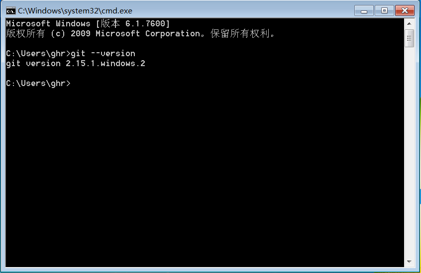
github账户的注册和配置
如果已经拥有账号，请跳过此步~
第一步: Github注册
打开github ，在下图的框中，分别输入自己的用户名，邮箱，密码。
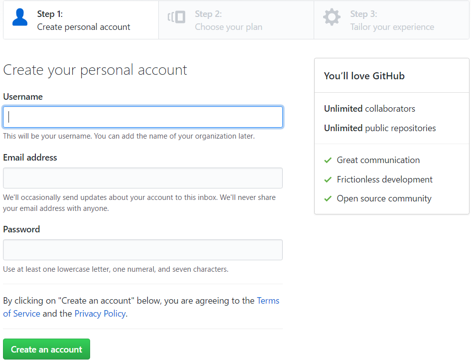
点击创建按钮，进入到第二步，选择无限的免费的仓库，当然了，你也可以选择无限的付费的库
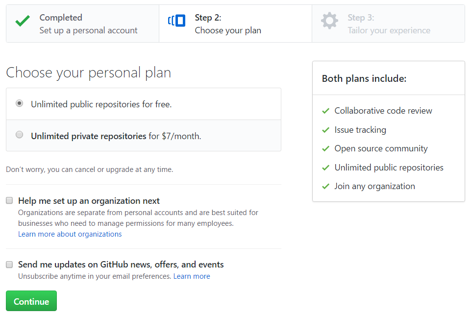
选择继续，然后前往自己刚才填写的邮箱，点开Github发送给你的注册确认信，确认注册，结束注册流程。
一定要确认注册，否则无法使用gh-pages！
第二步: 创建代码库
登陆之后，点击页面右上角的加号，选择New repository：
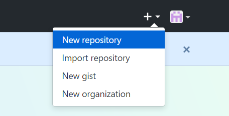
新建代码库
进入代码库创建页面：
在Repository name下填写yourname.github.io，Description (optional)下填写一些简单的描述（不写也没有关系），如图所示：
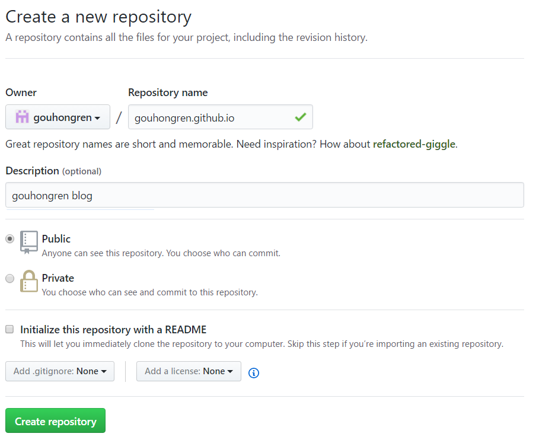
注意：比如我的github名称是gouhongren ,这里你就填 gouhongren.github.io,如果你的名字是zhangsan，那你就填 zhangsan.github.io
第三步: 代码库设置
正确创建之后，你将会看到如下界面：
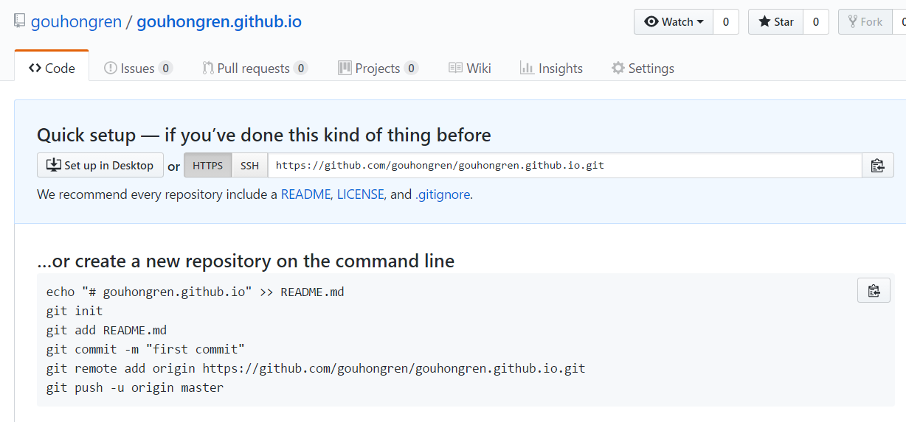
接下来开启gh-pages功能，点击界面右侧的Settings，你将会打开这个库的setting页面，向下拖动，直到看见GitHub Pages，如图：
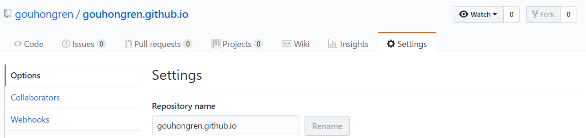
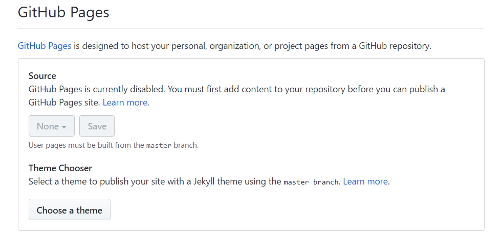
点击Choose a theme，选择一个主题，点击select theme。
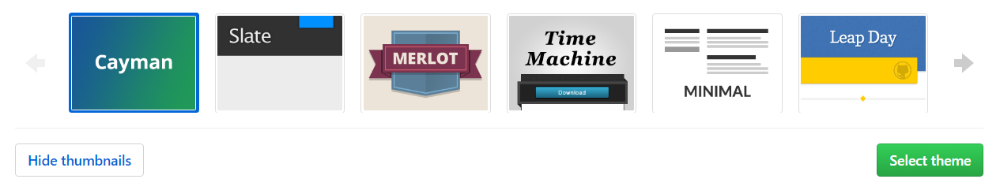
Github将会自动替你创建出一个gh-pages的页面。选择Commit changes。
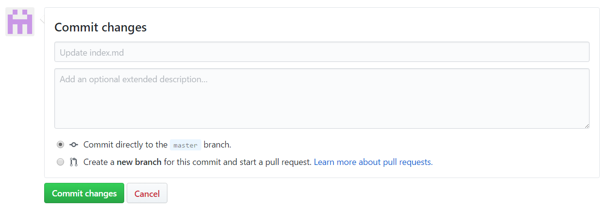
如果你的配置没有问题，那么大约15分钟之后，yourname.github.io这个网址就可以正常访问了~ 如果yourname.github.io已经可以正常访问了，那么Github一侧的配置已经全部结束了。
到此搭建hexo博客的相关环境配置已经完成，下面开始讲解Hexo的相关配置
## 安装Hexo
在自己认为合适的地方创建一个文件夹，这里我在桌面新建一个文件夹：hexo；打开文件夹，右键选择Git Brash Here
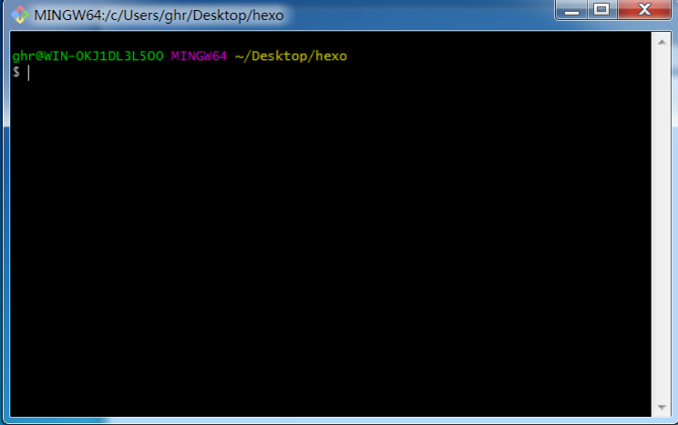
在命令行中输入：
1 | npm install hexo -g |
意思是通过nodejs的包管理组件npm在全局安装hexo
然后你会看到
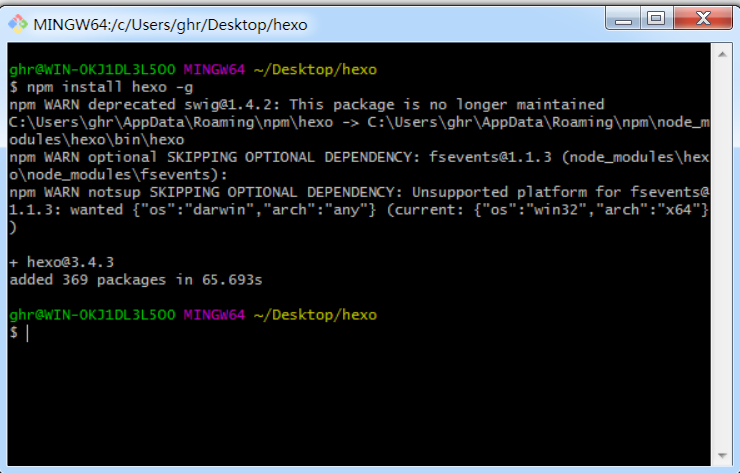
可能你会看到一个WARN，但是不用担心， 在命令行中输入：
1 | hexo -v |
如果你看到了如图文字，则说明已经安装成功了。
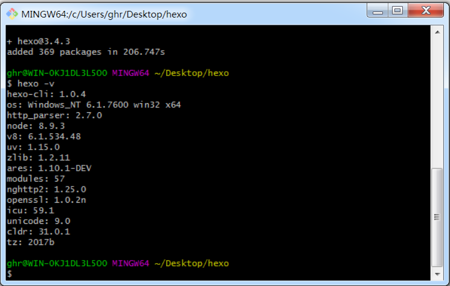
hexo的相关配置
初始化Hexo
接着上面的操作，输入：1
hexo init
然后输入：1
npm install
之后npm将会自动安装你需要的组件，只需要等待npm操作即可。
首次体验Hexo
继续操作，同样是在命令行中，输入：1
hexo g
然后输入：1
hexo s
然后会提示：
INFO Hexo is running at http://0.0.0.0:4000/. Press Ctrl+C to stop.
在浏览器中打开http://localhost:4000/，你将会看到:
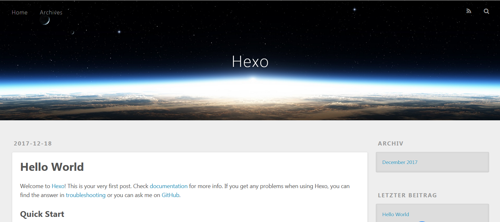
到目前为止，Hexo在本地的配置已经全都结束了。
下面会讲解怎样将Hexo与github page 联系起来
怎样将Hexo与github page 联系起来
大概分为以下几步
- 配置git个人信息
- 配置Deployment
- 配置Git个人信息
配置git个人信息
如果你之前已经配置好git个人信息，请跳过这一个 步骤，直接来到
设置Git的user name和email：(如果是第一次的话)
1
2git config --global user.name "gouhongren"
git config --global user.email "gouhongren@163.com"生成密钥
1
ssh-keygen -t rsa -C "gouhongren@163.com"
一路Enter过来就好，待秘钥生成完毕，会得到两个文件id_rsa和id_rsa.pub，用带格式的记事本打开id_rsa.pub，Ctrl + a，ctrl+c复制里面的所有内容
- github配置ssh key
然后进入github首页，点击右上角的小图标，选择setting，如图所示
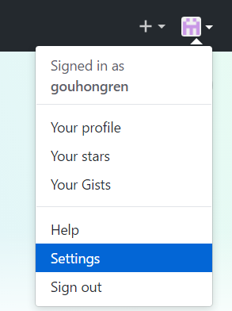
进入下一个页面，选择SSH and GPK keys然后选择New SSH keys，如图：
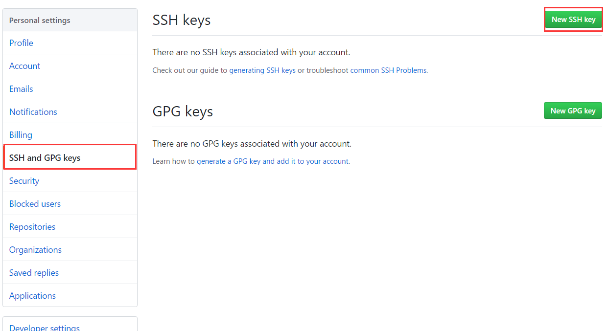
进入下一个页面，title随便取名，key来自于前面id_rsa.pub里面的内容，点击Add SSH keys
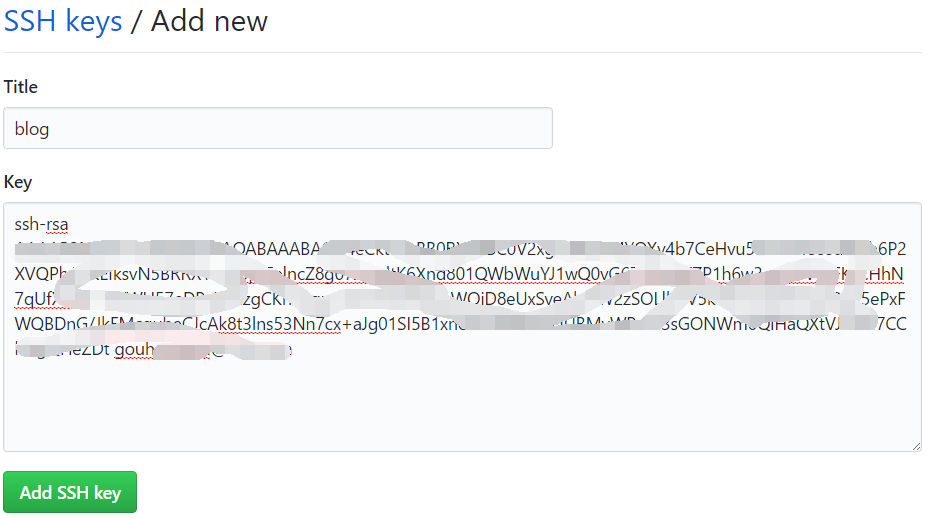
如果显示如下页面表示添加ssh key成功
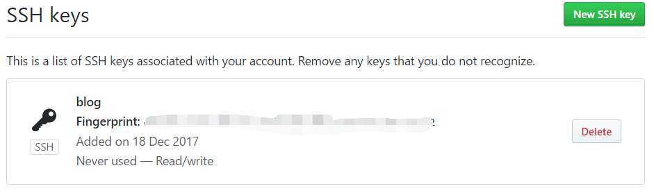
配置Deployment
在项目hexo文件夹的根目录找到_config.yml,打开它在文本结尾找到deploy，然后按照如下修改：1
2
3
4deploy:
type: git
repo: https://github.com/yourname/yourname.github.io.git
branch: master
在项目hexo文件夹的根目录找到_config.yml,打开它在文本结尾找到deploy，
比如我的仓库的地址是https://github.com/gouhongren/gouhongren.github.io.git，所以配置如下1
2
3
4deploy:
type: git
repo: https://github.com/gouhongren/gouhongren.github.io.git
branch: master
写博客、发布文章
新建一篇博客，执行下面的命令：(artical title这里是你自己要写博客的名称)1
hexo new post "我的第一篇博客"
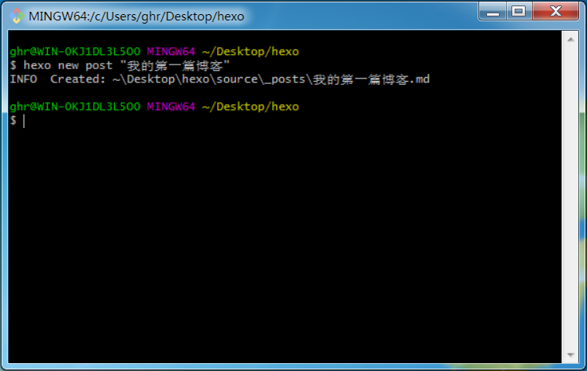
这时候在如下目录下 hexo\source\ _posts 将会看到 我的第一篇博客.md 文件
用MarDown编辑器（我使用的是HBuilder）打开就可以编辑文章了(这里需要了解一些基本的markdown写法，参考：点击我 ，很简单吧)。
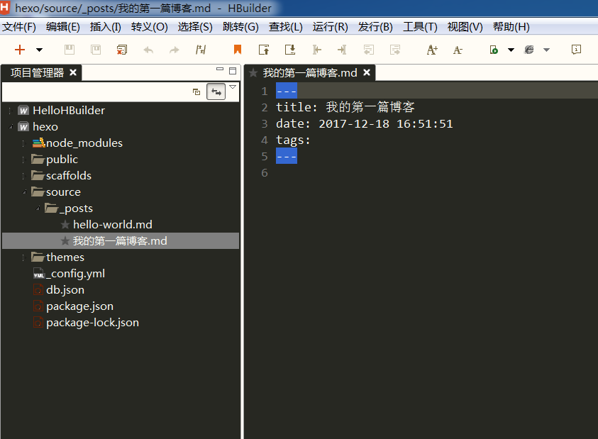
我们写下：
1 | 你好，欢迎来到我的个人技术博客。 |
如图：
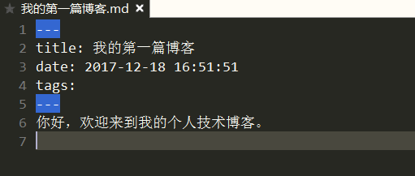
文章编辑好之后，运行生成、部署命令：
1 | hexo g // 生成 |
在浏览器中输入：localhost:4000,就会看到：
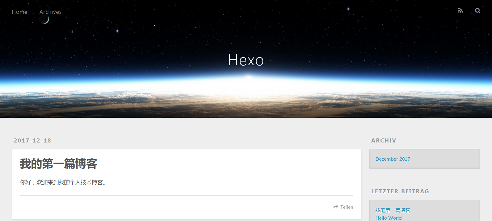
那么如何把写的博客部署到远程仓库呢？
？？？？？？？？？？？？？？？？？
当然你也可以执行下面的命令，相当于上面两条命令的效果1
hexo d -g #在部署前先生成